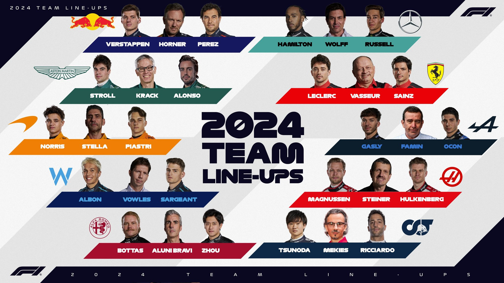
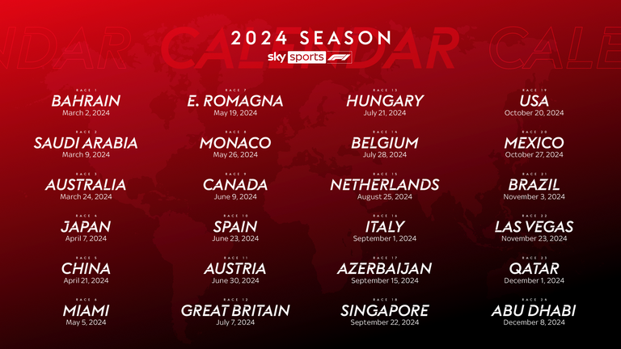
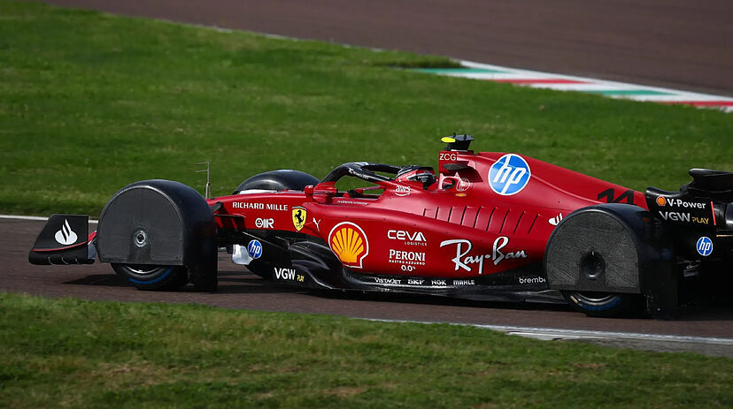
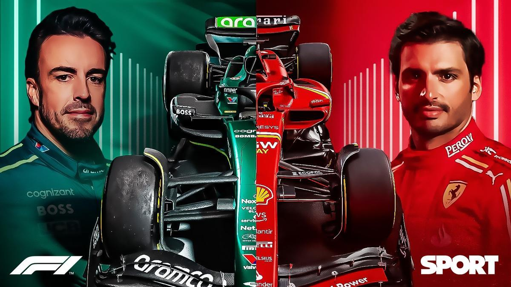

Introducción
La Fórmula 1 es la máxima categoría de automovilismo a nivel mundial. Descubre los emocionantes momentos, pilotos legendarios y los circuitos más desafiantes del planeta.
La Fórmula 1 (F1) es la categoría de automovilismo de velocidad más prestigiosa y avanzada tecnológicamente del mundo. Organizada por la Federación Internacional del Automóvil (FIA), la F1 es conocida por sus vehículos de alto rendimiento, pilotos de élite y competencias en circuitos globales. A continuación, se detalla un resumen y definición completa sobre qué es la Fórmula 1 y sus reglas:
La Fórmula 1 es una serie de carreras de automóviles de un solo asiento que se llevan a cabo en circuitos especializados o en calles cerradas en diversas ciudades del mundo. Los autos de F1 son vehículos altamente sofisticados que incorporan la última tecnología en términos de aerodinámica, materiales compuestos y sistemas de propulsión híbridos.
Historia
Orígenes: La F1 se originó en la década de 1950, con su primera temporada oficial en 1950.
Evolución: A lo largo de las décadas, ha evolucionado en términos de tecnología, seguridad y reglamentos, reflejando avances en ingeniería automotriz y una mayor conciencia de la seguridad de los pilotos.
Componentes Clave
Equipos y Pilotos: Cada equipo de F1 (también conocido como escudería) está compuesto por dos pilotos. Los equipos son responsables del diseño, construcción y operación de sus autos. 
Autos: Los autos de F1 son prototipos únicos, diseñados específicamente para cada temporada. Incorporan tecnología avanzada, como sistemas de recuperación de energía y motores híbridos.
Circuitos: Las carreras se realizan en una variedad de circuitos, incluyendo pistas permanentes y circuitos callejeros. Algunos de los más famosos incluyen Mónaco, Silverstone y Monza.
Reglas y Reglamentos
La FIA establece un conjunto de reglas estrictas para garantizar la equidad, la seguridad y el desarrollo sostenible del deporte. Estas reglas se dividen en varias categorías:
Técnicas
Motor y Propulsión: Los autos de F1 utilizan motores híbridos V6 turboalimentados de 1.6 litros con sistemas de recuperación de energía.
Aerodinámica: Hay regulaciones estrictas sobre el diseño aerodinámico para limitar las velocidades máximas y mejorar la seguridad.
Peso y Materiales: Los autos deben cumplir con un peso mínimo y están hechos de materiales avanzados como la fibra de carbono para maximizar la resistencia y minimizar el peso.
Formato del fin de semana de carrera.
Prácticas Libres: Generalmente, hay tres sesiones de prácticas antes de la clasificación.
Clasificación: Determina la parrilla de salida para la carrera. Se realiza en tres fases (Q1, Q2, Q3) donde los autos más lentos son eliminados progresivamente.
Carrera: La carrera principal suele tener una duración de 305 km o un máximo de 2 horas.
Puntuación: Los puntos se otorgan a los primeros 10 clasificados en cada carrera, con un sistema escalonado que premia al ganador con 25 puntos y al décimo lugar con 1 punto.
Penalizaciones: Los pilotos pueden recibir penalizaciones por infracciones de las reglas, que pueden incluir desde multas de tiempo hasta la descalificación.
Seguridad
Estructuras de Seguridad: Los autos están equipados con una celda de supervivencia, sistemas de protección para la cabeza (Halo) y estructuras de impacto.
Procedimientos Médicos: Hay protocolos médicos estrictos y equipos de emergencia en cada circuito.
Financiera
Presupuesto: Recientemente, se ha introducido un límite presupuestario para reducir los costos y nivelar la competencia entre equipos grandes y pequeños.
Innovaciones y Tecnologia
La F1 es un laboratorio de innovación donde muchas tecnologías desarrolladas para los autos de carreras encuentran su camino hacia los vehículos de producción. Ejemplos incluyen los sistemas de frenado regenerativo y los materiales compuestos avanzados. 
Influencia Cultural
La F1 no solo es una competición deportiva, sino también un evento mediático global con millones de seguidores. Las carreras son transmitidas a nivel mundial y atraen a una audiencia diversa, influenciando tanto el automovilismo como la cultura popular. 